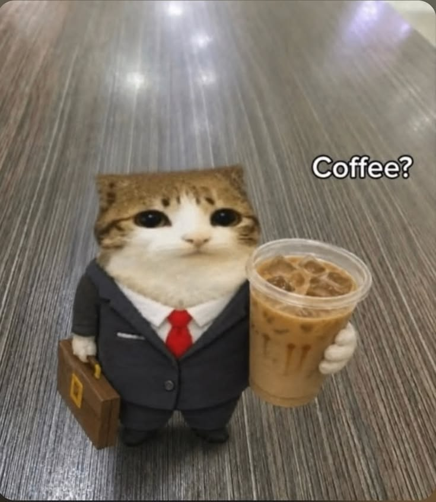

Sebelum jadi nama di depan pintu, Raka adalah anak muda yang gemar duduk lama di warung kopi sambil memperhatikan siapa saja yang datang dan mengapa mereka betah. Sudut Rasa lahir dari kebiasaan itu — sebuah kedai yang dirancang untuk orang yang ingin tinggal, bukan cuma singgah.
Ia turun langsung ke kebun, memilih biji bersama petani, lalu menyangrainya sendiri di ruang belakang kedai setiap Selasa pagi, sebelum toko buka untuk pelanggan.

Raka Pradipta — Pendiri & Peracik Utama
Mulai menyangrai biji kopi di dapur rumah pada akhir pekan, bersama beberapa tetangga yang jadi pencicip pertama.
Sudut Rasa dibuka di sebuah ruko kecil — tiga meja, satu mesin espresso bekas, dan pintu yang selalu terbuka lebar.
Mulai bekerja langsung dengan tiga kelompok tani di Sulawesi dan Sumatra, memutus rantai tengkulak yang panjang.
Sudut Rasa menjadi ruang kumpul harian bagi lebih dari seratus pelanggan tetap, dari pekerja lepas sampai kelompok belajar.
Kopi yang enak itu penting. Tapi yang saya cari sejak awal adalah ruang yang membuat orang mau tinggal lebih lama.
— Raka PradiptaRaka biasa ada di kedai setiap pagi, menyangrai atau menyeduh di balik meja bar. Mampir saja.